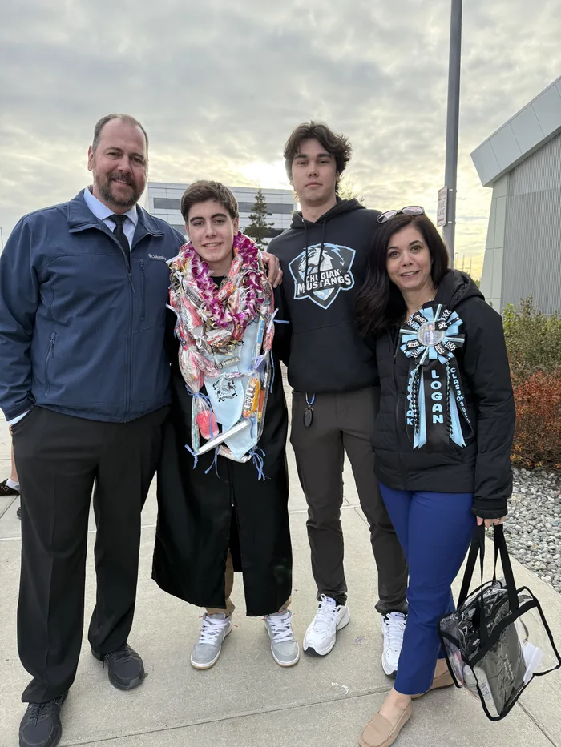
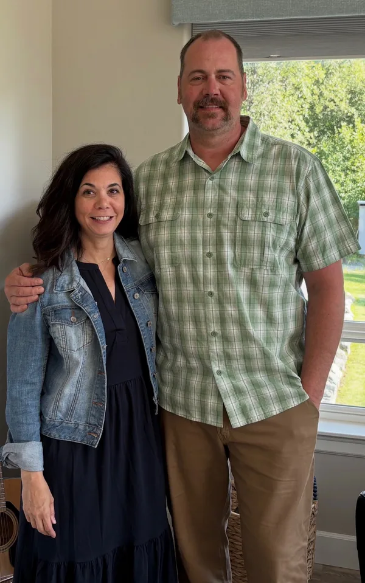

Twenty-four years in Eagle River and Chugiak
Gina and her husband, Doug, a longtime resident of Eagle River and proud Chugiak Mustang graduate, have raised their two sons, Jackson and Logan, in the Eagle River/Chugiak community for the past 24 years. Doug and Gina were married at Peace Lutheran Church, where they remain members.
Over the course of the past 24 years, Gina has worked to support others through some of life’s most difficult challenges. From serving as a domestic violence legal advocate during college, to working as a substance abuse counselor helping women navigate the complexities of addiction, to her current role as a high school counselor and Licensed Professional Counselor (LPC), Gina has developed a deep passion for helping others find stability, healing, and growth.

Community and common sense
Gina believes in community and common sense. Her priorities are focused on providing opportunities for strong education and ensuring our kids have access to experiences and resources that support healthy development. She is committed to helping young people grow academically, socially, and emotionally in a supportive environment.
Gina also believes in balance in life and the importance of working hard while finding joy in everyday moments. She loves to travel, read, and craft, and she values time spent with family. She is also developing her pickleball skills, enjoys fishing when the salmon are running, and spending time drifting the upper Kenai.

Steady, decisive, and willing to have hard conversations
Gina is steady, decisive, skilled at navigating complex issues, willing to have hard conversations, and deeply committed to serving her community for the common good.
Her years as a counselor, advocate, and community member have given her the tools to listen deeply, think carefully, and act with purpose, exactly the qualities District 24 needs in its next representative.